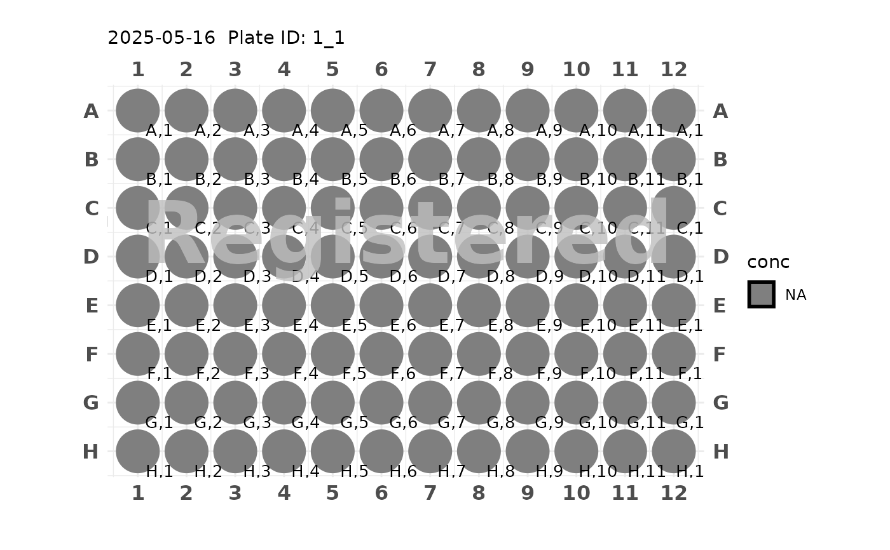
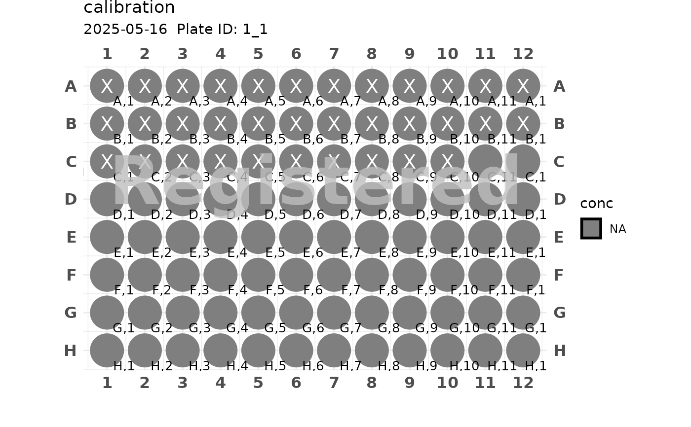

Generate 96 Plate Generate a typical 96 well plate. User need to specify the empty rows which a going to be used across the experiment.
Source:R/plate.R
generate_96.RdGenerate 96 Plate Generate a typical 96 well plate. User need to specify the empty rows which a going to be used across the experiment.
Examples
plate <- generate_96()
plot(plate)
#> Plate not registered. To register, use register_plate()
#> Warning: Removed 96 rows containing missing values or values outside the scale range
#> (`geom_text()`).

plate <- generate_96("calibration", start_row = "C", start_col = 11)
plot(plate)
#> Plate not registered. To register, use register_plate()
#> Warning: Removed 62 rows containing missing values or values outside the scale range
#> (`geom_text()`).
